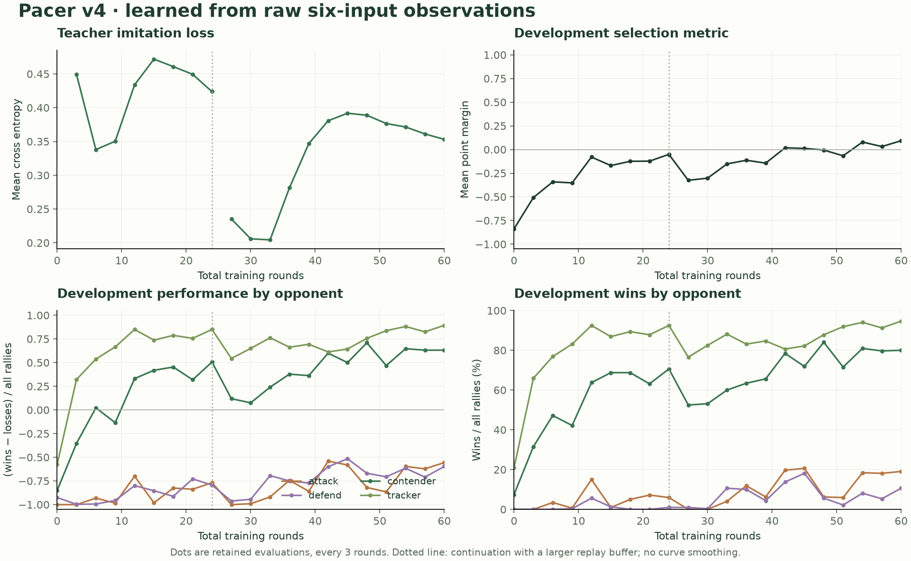

Historical study
Commands below refer to archived research sources, some retained only in the local experiment archive. They are not the maintained training workflow. Current play uses Classic v4.
PONGARENA / PONG V4
Give the rally
room to grow.
Rules tuned · new learned weights · separate confirmation sets
Start gently, build speed with each return, and use paddle placement to move the opponent. Pong v4 makes sustained exchanges possible before pressure builds. Pacer and Apprentice are new plain neural networks trained for these rules.
1.83 sFirst return, across the court
11 returnsMedian, strong attacker mirror
17,795Learned parameters per new model
A practical step toward tactical rallies.
On 64 reserved seeds, strong attacker mirrors score every rally after 7–19 returns, with a median of 11. The attacker beats the safer defender 384–119, with 137 draws. In all three strong-script pairings, every scoring return is already unreachable from the receiver’s position when the ball leaves the opposing paddle. Placement and recovery have consequences.
These scripts are reference controllers, not optimal players. First-receiver advantage remains: 60.3% in attacker mirrors and 71.6% in defender mirrors. Side-paired evaluation remains necessary. Actual keyboard and touch playtesting is still needed to assess enjoyment and accessibility.
One return rule. No hidden counter.
The serve has horizontal speed 5. Every successful return adds 1, capped at 13, regardless of where it hits the paddle. Higher and lower contacts determine its vertical direction. The angle scales with horizontal speed, so early edge shots stay readable. A center hit no longer resets the pace.
d = ball_y − updated_paddle_y
s = min(13, abs(incoming_vx) + 1)
vx = outgoing_sign × s
vy = floor(9 × s × d / 195 + 0.5)
The first return has horizontal speed 6 and maximum vertical speed 4. It takes eight returns to reach the cap; the fastest crossing takes 26 ticks (0.87 seconds). Paddle speed remains 2 units per tick. All state stays integer-valued, with the same six observations and three actions. Velocity inputs remain divided by 6, without clipping; current velocity already exposes the speed stage.
Court, collision order, seeded serves, 1,600-tick deadline and exact post-return loop detection retain their established definitions. Full definitions and Python/TypeScript references are in the standalone v4 package.
Same serves, stronger reference players
| Rules | Attacker mirror scored | Median returns¹ | First receiver wins¹ | Attack vs defense W/L/D | Defender mirror: first receiver¹ |
|---|
| Previous v3 | 0.0% | — | — | 0 / 0 / 640 | — |
| Gradual speed, unscaled angle | 72.8% | 9 | 63.5% | 308 / 296 / 36 | 5.1% |
| Pong v4 · selected | 100.0% | 11 | 60.3% | 384 / 119 / 137 | 71.6% |
Each cell summarizes 64 seeds × five serves × both assignments = 640 rallies. ¹ Among scored rallies. Both speed candidates use cap 13 and vertical factor 9; the unscaled candidate applies the full vertical factor even at the first return. Mirrors necessarily tie in aggregate when both roles are swapped.
The search screened caps 11–14 and vertical factors 5–9, then compared scaled factors 8 and 9, using 32 diagnostic seeds. The selected settings were locked before this 64-seed confirmation. No strong-script pairing under the selected rules scores before seven returns. Attacker mirrors last a median of 13.67 seconds.
A stage-aware safety calculation still proves never-concede play for some milder candidates. It does not establish a universally safe defense for v4. That failed sufficient test is not proof that optimal attack always wins.
Learning from six numbers
Both new models use 6 → 128 → 128 → 3, with Tanh between learned linear layers: 17,795 parameters, 17,536 multiply-accumulates, five ONNX nodes and 71,658 bytes. Inference contains learned weights only. The three output scores choose up, stay or down by first argmax.
Training uses PyTorch DAgger: a geometric attacker labels states encountered by the learner, then cross entropy teaches the network to reproduce those choices. The teacher is used only during training. Opponents include stronger scripts, older weights and simpler baselines. Broad synthetic component-valid states supplement game trajectories; they are not assumed to be reachable.
Pacer uses 24 initial rounds plus 36 continuation rounds: 3,932,160 active environment steps, with a larger replay buffer in the continuation. Apprentice is the initial run’s round-six checkpoint, chosen as an easier opponent. Checkpoints were selected on development seeds before either model saw the final set. This is supervised imitation with dataset aggregation; no PPO run is claimed.

Loss and accuracy are training measurements. Match curves use 32 development seeds, five serves and both assignments. Dots show retained evaluations every three rounds; lines connect observations, with no smoothing. Download the plotted values, final metrics and seed lists.
What the new weights can actually beat
| Model | Opponent | W / L / D | Median returns¹ | Point margin · 95% CI |
|---|
| Pacer v4 | Pacer v4 | 307 / 307 / 26 | 11 | +0.000 to +0.000 |
| Pacer v4 | Apprentice v4 | 397 / 186 / 57 | 8 | +0.266 to +0.400 |
| Pacer v4 | Adaptive attacker | 163 / 439 / 38 | 9 | -0.477 to -0.386 |
| Pacer v4 | Adaptive defender | 77 / 441 / 122 | 8 | -0.614 to -0.520 |
| Pacer v4 | Contender (old weights) | 512 / 112 / 16 | 8.5 | +0.578 to +0.675 |
| Pacer v4 | Selfplay v2 (old weights) | 490 / 113 / 37 | 9 | +0.534 to +0.644 |
| Pacer v4 | Tracker | 615 / 25 / 0 | 2 | +0.894 to +0.947 |
| Pacer v4 | Anticipator | 624 / 16 / 0 | 3 | +0.922 to +0.972 |
| Apprentice v4 | Tracker | 517 / 123 / 0 | 2 | +0.556 to +0.669 |
| Apprentice v4 | Anticipator | 394 / 246 / 0 | 3 | +0.156 to +0.306 |
| Apprentice v4 | Contender (old weights) | 299 / 300 / 41 | 5 | -0.073 to +0.067 |
Separate model confirmation: 64 untouched seeds, 640 rallies per pairing, using frozen PyTorch checkpoints in the verified vector environment. Native and browser ONNX inference were checked separately against those weights; this table is not an all-ONNX run. ¹ Among scored rallies. Point margin is (wins − losses) / all rallies. Confidence intervals resample whole paired seeds. Older weights are evaluated under v4 rules, so these are transfer comparisons, not their original leaderboards.
Pacer clearly improves on older weights under the new rules, and Pacer mirrors sustain a median of 11 returns. It still loses to the adaptive attacker and defender. These results establish a playable learned baseline, not a training ceiling or a claim to have beaten optimal scripted play.
Archived Pacer and Apprentice weights (ZIP) ↓ · Watch or play in the arena →
Reproducible, with limits visible
Rule verification compares 45,493 independent scalar/vector transitions and 1,082,322 exhaustive contact transitions. Fifteen complete action fixtures agree with the independent v4 reference. Both exports pass the arena validator and native ONNX checks; 8,192 numeric probes per model preserve every PyTorch action. Browser WASM parity also passed all six complete native-ONNX matches: 10,904 frames and 21,760 decisions, with zero action or state mismatches and maximum score difference 0.00001145.
Training game seeds are below 1 billion. Development seeds are in [1.9, 2.0) billion, rule screening in [2.3, 2.4), rule confirmation in [2.4, 2.5), and final model confirmation in [2.6, 2.7). Exact lists, frozen hashes, checkpoints, scripts and raw logs live in training/results/pace-study/.
Rebuild the report and verification
.venv/bin/python training/results/pace-study/verify.py
.venv/bin/python training/scripts/verify_pace_models.py
.venv/bin/python training/scripts/pace_report.py
Full training commands and the exact historical source snapshots are documented in training/results/pace-study/training/README.md. The frozen final evaluation intentionally refuses to overwrite its results. New tuning requires new reserved seeds.
A delayed-observation controller was a timing sensitivity check, not a human simulation. Numerical success does not establish subjective fun. Persistent serve advantage and the learned models’ losses to strong scripts remain useful targets for future evaluation.